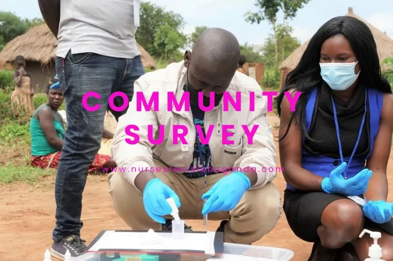

Expanded Nursing Uganda Explanation
Community Survey should be understood beyond a short definition. Link the concept to patient history, focused assessment, common risks, nursing priorities, documentation and evaluation of outcomes.
01 **Community Survey**
Community survey is a method of gathering information and data about a specific community.
This follows Community Entry.
02 Facts or Profile to be obtained during a Community Survey
1. Population Size : The survey collects data on the total number of individuals living in the community. This information helps in understanding the scale of the population and its implications for planning and resource allocation.
2. Location : The survey identifies the geographical location of the community, including its specific geographical boundaries. This information is important for mapping, resource allocation, and understanding the community’s environmental status.
3. Climate Conditions : Data on the climate conditions of the community, such as temperature, rainfall patterns, and prevailing weather conditions, are collected. This information helps in understanding the environmental status and can have implications for various sectors, including agriculture, health, and infrastructure.
4. Ethnicity : The survey gathers information on the ethnic composition of the community, including the major ethnic groups residing in the area. Understanding the ethnic diversity of a community is important for cultural sensitivity, equitable service provision, and promoting social cohesion.
5. Economic Status : Information on the economic status of the community is obtained during the survey. This includes factors such as income levels, poverty rates, employment opportunities, and economic indicators. Understanding the economic status helps in addressing socio-economic differences and designing targeted interventions.
6. Education : The survey collects data on the education levels and literacy rates within the community. This information provides insights into the educational needs, availability of educational resources, and potential barriers to accessing education.
7. Standard of Living: Data on the standard of living are obtained to assess the overall quality of life within the community. This may include housing conditions, access to basic needs (such as clean water, sanitation, and electricity), and indicators related to health and well-being.
8. Occupation : The survey gathers information on the types of occupations and employment patterns within the community. This data helps in understanding the community’s economic activities, labor markets, and potential skill gaps or opportunities.
9. Religion : Information on religious affiliations and practices within the community is collected during the survey. This helps in understanding the religious diversity and cultural practices that may influence various aspects of community life.
- What are the major problems or challenges faced by the community?
- How well is the existing health facility addressing these problems or challenges?
- What are the strengths and weaknesses of health workers in their roles and responsibilities?
- What are the perceived problems and needs of health workers in delivering healthcare services?
- What are the perceived problems and needs of community members regarding their healthcare?
- Are community members satisfied with the quality and accessibility of healthcare services?
- What are the barriers or challenges community members face in accessing healthcare?
- Are there specific health issues or diseases prevalent in the community that need attention?
- Are community members aware of preventive healthcare measures and health promotion activities?
- Are there any specific groups within the community (e.g., children, elderly, marginalized populations) that require targeted healthcare interventions?
- Are there any cultural or social factors that influence healthcare-seeking behaviors in the community?
- Are there any existing community-based healthcare initiatives or programs? How effective are they?
- What are the community’s perceptions and attitudes toward healthcare providers and services?
- Are there any gaps in healthcare infrastructure or resources within the community?
- How does the community perceive the affordability and availability of healthcare services?
03 Importance of conducting a Community Survey
1. Identification of the community’s needs and problems : A community survey helps to systematically identify the specific needs, challenges, and issues faced by the community. It provides valuable data and insights that inform decision-making and resource allocation.
2. Provision of data for planning, implementation, and evaluation : The data collected through a community survey serves as a foundation for planning, implementing, and evaluating community-based health and development programs. It ensures that interventions are evidence-based, targeted, and aligned with the community’s needs.
3. Development and decision-making for community involvement : A community survey helps in developing strategies to involve the community actively in the planning and implementation of programs. It fosters participatory approaches, ownership, and empowerment within the community.
4. Community self-awareness and problem-solving: By conducting a survey, the community becomes more conscious of its existing problems, challenges, and potential solutions. It creates an opportunity for the community to reflect on its own strengths and weaknesses and take collective action to address the identified issues.
5. Matching project organization and services to community needs : The data from a community survey helps in aligning project organizations and services with the specific needs and priorities of the community. It ensures that resources and interventions are tailored to the unique characteristics of the community.
6. Understanding social, cultural, and environmental characteristics: A community survey provides insights into the social, cultural, and environmental aspects of the community. It helps in understanding the way in which interventions will be implemented and tailoring strategies to the community’s specific characteristics.
7. Creating opportunities for inter-sectoral collaboration : A community survey facilitates the identification of opportunities for collaboration among different sectors, such as healthcare, education, social services, and environmental agencies. It promotes coordination among stakeholders to address the multifaceted needs of the community.
04 **How to Conduct a Community Survey**
When planning a survey, consider the following ;
- Time
- What information will be collected
- Community health problems
- Competencies of the health workers
- Community attitude towards health workers
- Health resources in the community
- Environmental sanitation as in H 2 O, housing, nutrition, hygiene
- Where will the data be collected?
- How will the data be analyzed?
- How will the data be used?
Planning :
- Clearly define the purpose and objectives of the survey.
- Consult individuals with relevant experience and expertise in survey design and implementation.
- Visit the community to gather information about the population, culture, and specific health issues.
- Determine the key questions or observations to be included in the survey and ensure they are standardized.
- Design the survey instrument or questionnaire and finalize its format and presentation.
- Select an appropriate sample size and sampling method.
- Allocate resources required for the survey, including personnel, equipment, and funding.
Organizing :
- Obtain cooperation and involvement from local community members who can assist in organizing and conducting the survey.
- Recruit and train survey staff or volunteers who will administer the survey.
- Arrange for necessary laboratory facilities or equipment if required for data collection.
- Develop a detailed plan outlining the tasks, responsibilities, and timeline for each phase of the survey.
- Prepare all the required resources, such as survey materials, data collection tools, and logistics.
Implementation :
- Provide supervision to the survey staff to ensure they have the necessary equipment and resources for data collection.
- Supervise and coordinate with senior members of the local community who are assisting with the survey.
- Ensure that the survey is administered properly, and participants receive satisfactory service.
- Monitor data collection to maintain data quality and accuracy.
Evaluation and Feedback :
- Analyze the collected survey data using appropriate statistical methods.
- Discuss the results with medical staff and members of the community to gain additional insights and perspectives.
- Prepare a brief report summarizing the findings, including recommendations for action.
- Share the report and recommendations with relevant stakeholders, such as the Ministry of Health or community leaders.
- Provide feedback to the community, sharing the survey results and engaging in a dialogue about potential interventions and next steps.
05 Roles of a nurse in a community survey
1. Planning and Design : Nurses play a crucial role in the planning and design phase of a community survey. They contribute their knowledge and expertise in identifying relevant health indicators, designing appropriate survey questions related to health, and ensuring that the survey instrument captures important health data.
2. Data Collection : Nurses actively participate in the data collection process during a community survey. They administer surveys, conduct interviews, and engage with community members to gather accurate and reliable health-related information. Nurses ensure that data collection is conducted in an ethical and culturally sensitive manner.
3. Health Education and Promotion : Nurses have an opportunity to provide health education and promotion messages during the community survey. They can disseminate information about preventive measures, health behaviors, and available healthcare services to community members. This role helps to raise awareness and promote positive health practices.
4. Health Assessment : Nurses contribute to the health assessment component of the community survey. They assess the health status of individuals, families, and the community as a whole. They may conduct physical assessments, collect vital signs, and screen for common health conditions. This assessment helps in identifying prevalent health issues and planning appropriate interventions.
5. Collaboration and Networking: Nurses actively collaborate with other healthcare professionals, community leaders, and organizations involved in the community survey. They work together to ensure the smooth execution of the survey, share health-related insights, and collaborate on follow-up actions, such as referrals for healthcare services or interventions.
6. Data Analysis and Interpretation : Nurses participate in the analysis and interpretation of health-related data collected during the survey. They apply their clinical knowledge and expertise to analyze health indicators, identify patterns or trends, and draw meaningful conclusions. Nurses contribute to the interpretation of data to inform healthcare planning and decision-making.
7. Reporting and Documentation : Nurses play a vital role in documenting survey findings, outcomes, and recommendations. They contribute to the preparation of reports summarizing the health-related data, observations, and identified health needs. Nurses ensure accurate documentation and communication of the survey results to relevant stakeholders, including healthcare teams and community leaders.
06 Nursing Uganda Clinical Lens
Use Community Survey as a practical nursing topic, not only a memorized definition. Move from individual illness to prevention, population risk, health education and continuity of care.
- What to understand first: define community survey, identify the normal or expected pattern, then explain what changes when the patient is unwell.
- Why it matters in care: the nurse must recognize risk early, explain findings clearly, document accurately and know when to escalate.
- How to revise it: connect each point to assessment, nursing diagnosis or care problem, intervention, rationale and evaluation.
07 Assessment Guide
- Who is affected, where they live, risk factors, resources and barriers to care.
- Environmental hygiene, nutrition, immunization, water, sanitation and health-seeking behaviour.
- Community beliefs, leaders, household practices and surveillance data.
08 Nursing Priorities, Rationales and Outcomes
- Promote prevention, early detection, referral and community participation.
- Use clear health education matched to literacy, culture and available resources.
- Document findings and coordinate with community health structures.
The rationale for these priorities is patient safety: nursing actions should prevent deterioration, reduce discomfort, support recovery and create clear evidence for the next caregiver.
- Expected outcome: The community understands the message, risk is reduced and follow-up or referral pathways are active.
09 Patient Teaching and Revision Check
- Explain community survey in simple language the patient or caregiver can repeat back.
- Teach warning signs, medicine or follow-up instructions, hygiene or lifestyle points where relevant.
- For exams, prepare a short answer using: definition, causes or risk factors, signs, assessment, management, complications and prevention.
- For ward practice, document baseline findings, actions taken, patient response and the plan for review.
Illustrations and Diagrams (12)



4 more diagrams available, open the lesson for full illustrations.
Related Video Lectures
Watch nursing lecture videos on YouTube for this topic. Opens in a new tab.
Watch on YouTubeExternal link: YouTube may use its own cookies and terms. Nursing Uganda is not affiliated with YouTube.